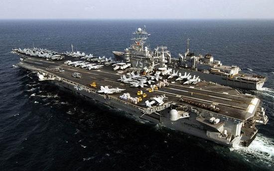

央视网消息：有美国媒体日前刊文称，美国在亚太称霸时间太长了，因此对于实力正在迅速增长的中国不够重视。而这样轻敌的结果将让中国在亚太不开一枪就可以击败美国。有美军的高官甚至对外表示，未来应该配备更多舰艇才能够在亚太保持对中国的军事优势。
美国《国家利益》杂志网站日前刊文称，中国海军和空军的整体实力近年来“不断加强和扩充”。但这却没有引起美方警惕，有美军高官甚至还在用一种傲慢心态看待中国军事力量，这将让美军付出代价。文章称，以现在解放军的实力完全可以在局部地区突然行动，比如“夺取钓鱼岛或是给台湾一个教训”，将会让美方措手不及。当美军在事件发生后评估解放军实力时，会发现直接与解放军进行对抗将付出极高代价，因此就会选择退让。这样，中国就可以不开一枪战胜美国。如果美国未来不想遭遇这种情况，就必须重视中国军力发展并提早做好应对。
这两年无论中国空军还是海军，实力都在迅速增长，这一点有目共睹。但美国的媒体在评论当中提到的，对于中国军力增长美国缺乏警惕，他们认为中国可以不开一枪战胜美国。
台湾实践大学副教授 赖岳谦：“美国媒体之所以有这样的评论跟分析，最主要有两个因素。第一，刻板印象，过去美国长期以来在全世界，特别是在亚太地区整个太平洋几乎就是美国人的‘内海’，所以习惯性在‘内海’里面认为不会碰到任何对手。第二，美国突然发现中国长期以来都在‘白水海域’行走，中国的战机通常也飞得不是很远。突然间美国发现，中国不但有新式战机出现，战机已经完成空中加油技术。所以，中国航空兵的飞行距离已经可以突破所谓第一或者第二岛链到很远的地方。另外，中国的海军上有了很大进展，不管是核动力潜舰还是传统的柴油动力潜艇，以及水面战舰制造速度如此快。中国的造船工业目前来讲全世界排名第一，这些都让美国非常惊讶。”
在美媒评论的过程当中，它认为如果现在在钓鱼岛或者是台海地区动武，中国可以让美国措手不及、知难而退。对于这样的评论专家给出了分析。
中国国际问题研究院美国所所长 滕建群：“这两个点应该是冷战结束以后，美国一直在炒作企图借此来牵制中国。在2012年之前中日之间在管控钓鱼岛方面做出很大努力，但在2012年9月份日本政府采取‘购岛’形式改变了钓鱼岛形态。现在中国在这个地区进行国家性执勤维护海洋权益。美国一直把台湾作为一个不沉的‘航空母舰’，特别是中美建交之后38年，这个过程起起伏伏。很多时候因为美国对台政策，包括售台武器给中美关系带来巨大影响。从马英九开始当政期间，两岸互动对于稳定两岸关系带来了很大的促进利好影响，美国想插手都插不进来。奥巴马搞亚太再平衡，把南海、东海问题挑起来等等，但是台湾这个点没有给引爆，主要还是两岸做出了极大努力。美国提台湾实际上也知道这是中国的核心利益，它要击中要害、刺痛到痛点，来为自己亚太政策提供服务，我们必须给予坚决回击，也要保持高度警惕。”
美国媒体的评论中还指出，现在中国这几年在亚太地区广交朋友，认为中国用这种“拉朋友”的方式，无形中极大削弱了美国在该地区的影响力，以达到“不战而屈人之兵”的一个效果。有专家对此认为，这样的分析观点有一定道理。
二次世界大战以后，美国在亚太地区所建立的这些同盟国关系基本上属于军事同盟关系。不管是韩国、日本、菲律宾或者泰国，选择这些地缘战略上能够围堵中国这样一个战略目的。美国透过跟这些国家若干政治、外交或者经济援助，来交换它取得军事基地的可能性。不过，随着这些亚太地区国家逐渐上升富裕起来以后，美国的这些援助看起开微不足道。中国采用的策略是完全不同于美国的，中国跟周边的国家交朋友。整个东盟，亚太的国家跟中国的贸易经济来往，中国几乎都是它们的第一大贸易国。这个过程中美国的影响力在逐渐衰败。